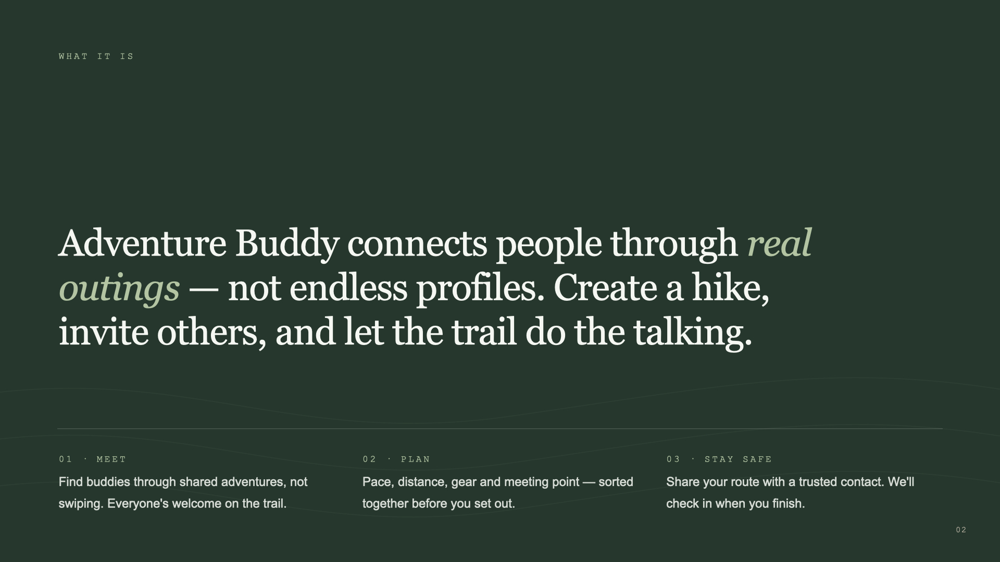
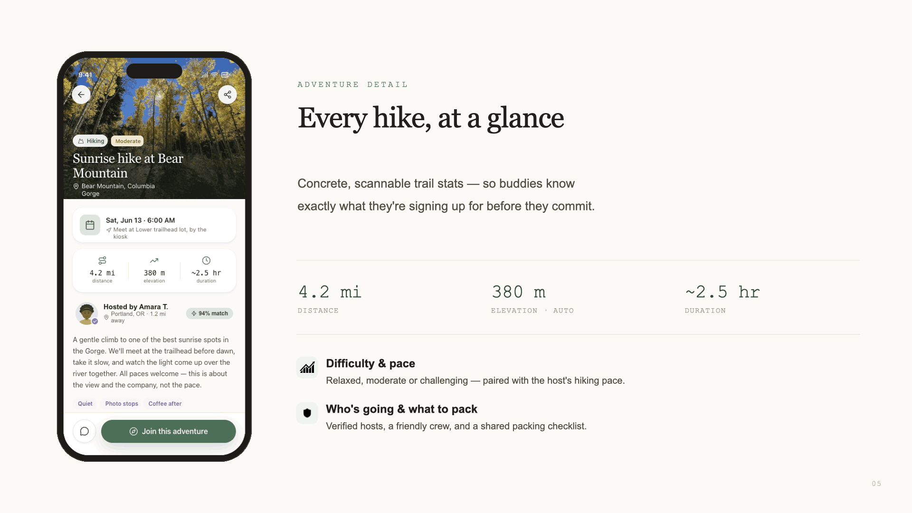
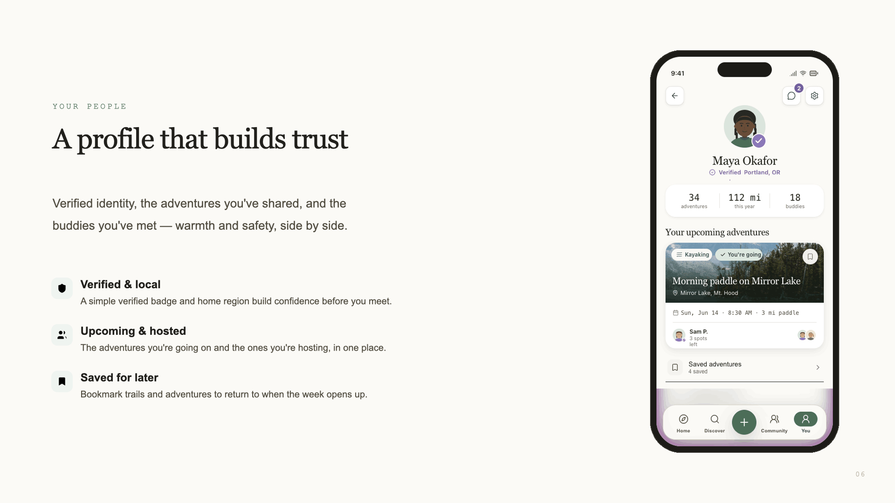
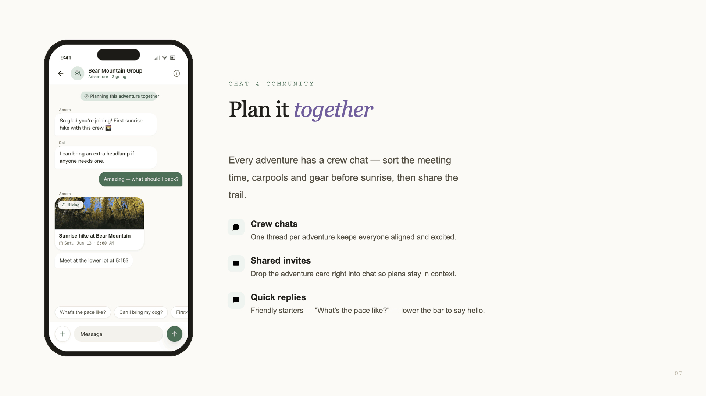

Adventure Buddy connects people through real outings, not endless profiles. Create a hike, invite others, and let the trail do the talking. I owned every layer: palette, type, voice, iconography, mobile product, and marketing site, documented as a real design system.
I wrote the product as a story before I designed a screen. Maya spends twenty minutes on onboarding, not because it is complicated, but because she keeps pausing to think. Hiking, obviously. Photography, absolutely. Kayaking, when the weather cooperates. No interest in anything that requires a rope and a helmet, at least not yet.
“Finally, it does not feel like performing.” It feels like filling out a form for her true self.

I deliberately avoided dating-app conventions, gamification, and the rugged extreme-sports look. No matching, no swiping, no streaks. People you hike with are buddies; a planned outing is an adventure; safety check-ins are trail check-ins.



This portfolio is built in that system. You are looking at it.